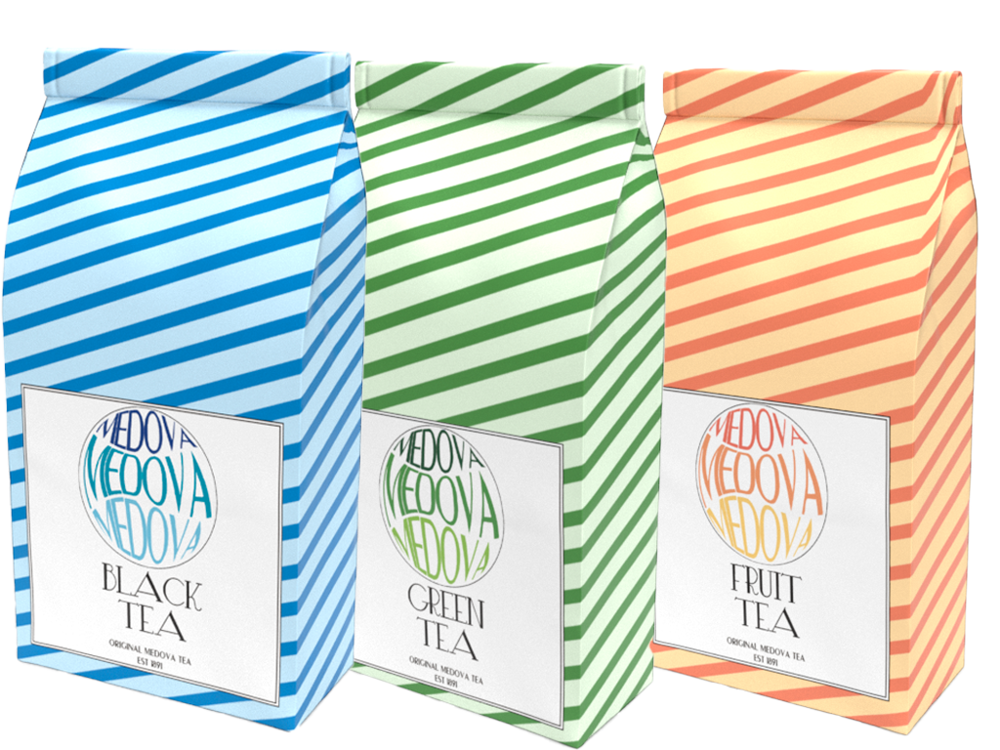

OM MEDOVA
Medovas historie
Brandet startede på det engelske marked og gik dengang
under navnet Mypole. Navnet MEDOVA ses første gang anmeldt
d. 11. september 1897, for 125 år siden. Først i 1907 kom
produktet til Danmark.
Original Medova te er en klassisk 100% ren te lavet på udsøgte
topskud fra teplanter fra Kenya, Ceylon(Sri Lanka), Indien og Indonesien.
Teen kommer i en praktisk tepose i en pakke med 25 breve.
Teen er klar til servering efter en trækketid på 2-3 minutter,
så du nemt og hurtigt kan lave dig en god kop te.
Medova te indeholder koffein ligesom kaffe. En kop Medova te
indeholder halvt så meget koffein som en kop kaffe,
men dog så meget, at det giver en opkvikkende effekt på hjernen.

Lær mere om Medova.
Opdag hvor Medova teen kommer fra